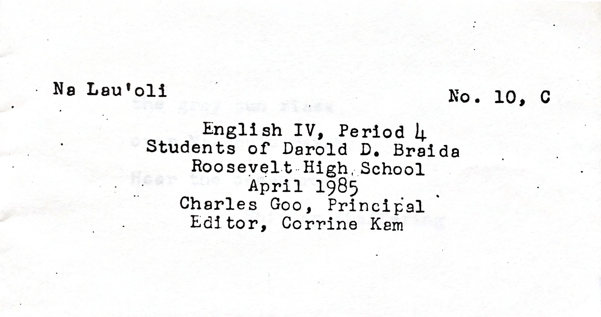
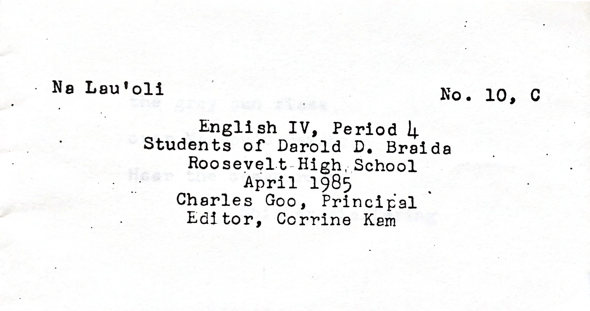

mom's high school haiku
the 80s high rise
february 19, 2024
there's nothing i love more than an experience that can transport you another place, better yet, another time. my nostalgia more often takes the form of nostalgia for times i've never experienced, times whose eras and auras i've gleaned from movies, songs, books, and my favorite, my mom's descriptions of her childhood. in the summer of 2021, i found her stash of mementos in a sun-faded fila shoebox, among which i found a hand-bound booklet entitled "na lau'oli" ("singing leaves").
 

in the april of 1985, mr. braida of roosevelt high school in honolulu, hawaii collected with care the haikus of his fourth period junior year english class into appropriately leaf-sized booklets and handed them out to each one of his students whose tentative prose was cherished inside. 36 years later, one of these booklets would still remain in a student's possession, my mom's, and be discovered by me, at the time in between my own junior and senior years of high school. leafing through the pages, i found my mom's haiku on one of the first pages:

no poetry critic, i tried my best to see this poem from her point of view. “her” being the 17-year-old who had written this haiku, probably rushing to get her homework done after school so she and her siblings could go play at their favorite arcade on the top floor of a waikiki hotel. i thought of the skyscraper she was imagining (maybe the arcade's hotel), the hawaiian summer nights, and of the world that was hers. the siblings crowding around to watch mtv on a friday night and neon lights flashing across on the screen, pacman, the bananarama cruel summer music video, and in the mainland american cities too, the madonna-wannabes walking among the gordon-gekko-lookalikes: the upwards-gazing 80s dreamers with stars in their eyes.
on that day, i made my first era-specific playlist and found the perfect playlist cover on pinterest to match: